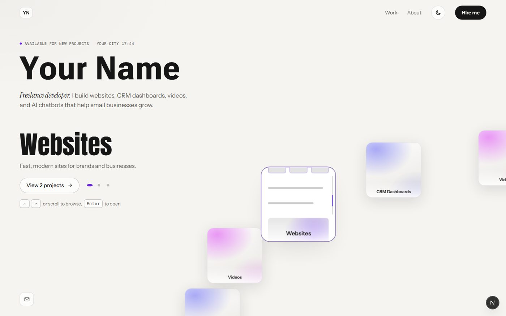
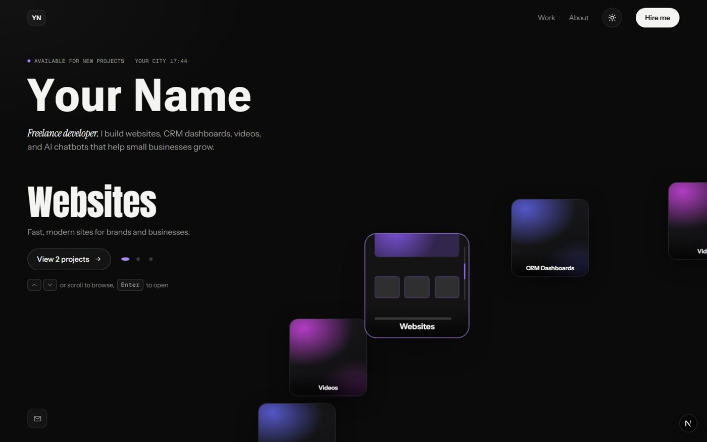
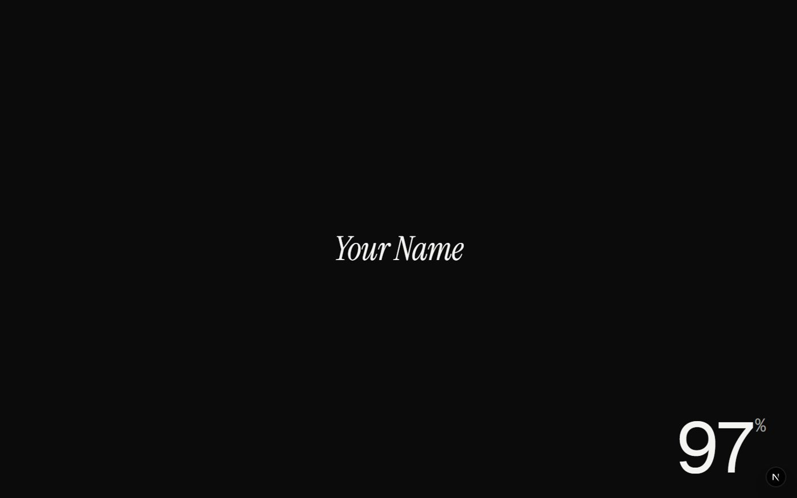
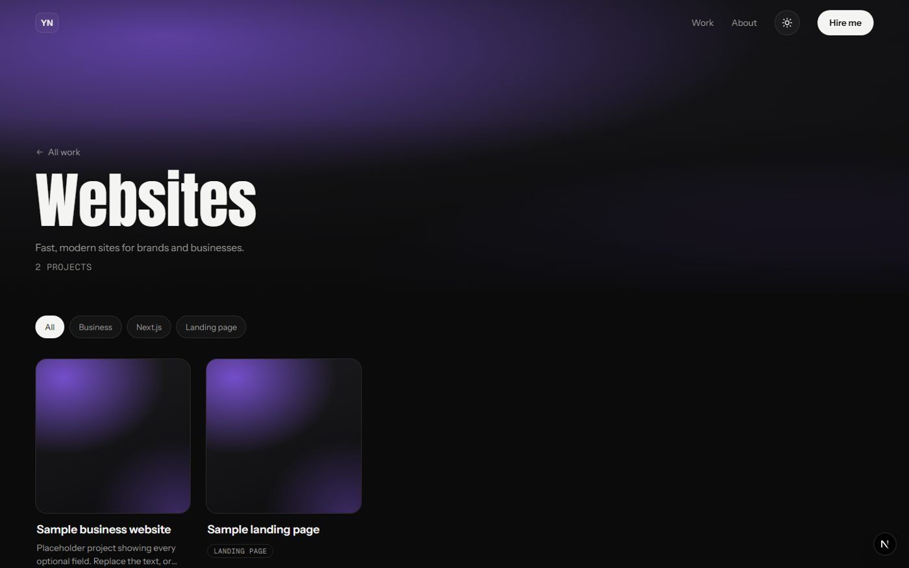
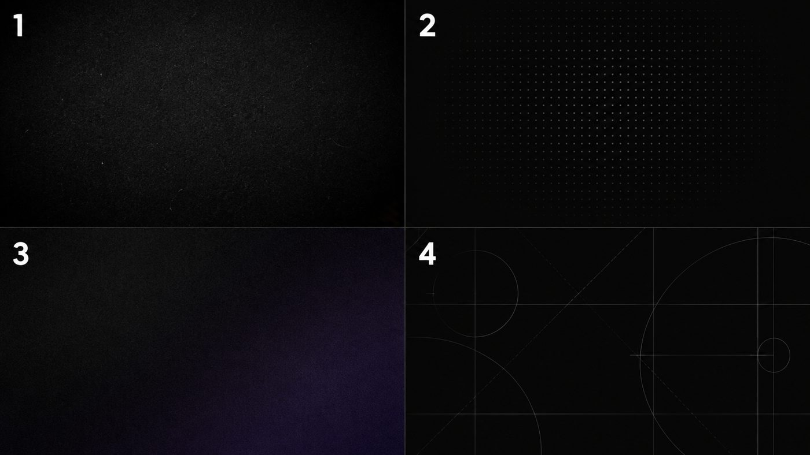

<title>Arc Portfolio Plan</title>
<link rel="preconnect" href="https://fonts.googleapis.com">
<link rel="preconnect" href="https://fonts.gstatic.com" crossorigin>
<link rel="stylesheet" href="https://fonts.googleapis.com/css2?family=Anton&family=Geist+Mono:wght@400;500&family=Instrument+Sans:wght@400;500;600&family=Instrument+Serif:ital@1&display=swap">
<style>
  :root {
    --ground: #f5f4f1;
    --surface: #ffffff;
    --ink: #161616;
    --body: #2b2a28;
    --muted: #55534e;
    --faint: #6a6862;
    --line: rgba(22, 22, 22, 0.12);
    --line-strong: rgba(22, 22, 22, 0.24);
    --marker: #6d28d9;
    --marker-soft: rgba(109, 40, 217, 0.1);
    --chip: #ebe9e4;
    --shadow: rgba(40, 36, 30, 0.12);
    --display: "Anton", "Arial Narrow", Impact, sans-serif;
    --sans: "Instrument Sans", "Helvetica Neue", Arial, sans-serif;
    --serif: "Instrument Serif", Georgia, serif;
    --mono: "Geist Mono", ui-monospace, "SFMono-Regular", Consolas, monospace;
    --ease-out: cubic-bezier(0.23, 1, 0.32, 1);
  }
  @media (prefers-color-scheme: dark) {
    :root:not([data-theme="light"]) {
      --ground: #0b0b0c;
      --surface: #141415;
      --ink: #f4f4f2;
      --body: #d4d4d0;
      --muted: #9a9a96;
      --faint: #878680;
      --line: rgba(255, 255, 255, 0.1);
      --line-strong: rgba(255, 255, 255, 0.2);
      --marker: #a78bfa;
      --marker-soft: rgba(167, 139, 250, 0.14);
      --chip: #1c1c1f;
      --shadow: rgba(0, 0, 0, 0.5);
    }
  }
  :root[data-theme="dark"] {
    --ground: #0b0b0c;
    --surface: #141415;
    --ink: #f4f4f2;
    --body: #d4d4d0;
    --muted: #9a9a96;
    --faint: #878680;
    --line: rgba(255, 255, 255, 0.1);
    --line-strong: rgba(255, 255, 255, 0.2);
    --marker: #a78bfa;
    --marker-soft: rgba(167, 139, 250, 0.14);
    --chip: #1c1c1f;
    --shadow: rgba(0, 0, 0, 0.5);
  }

  * { box-sizing: border-box; }
  html { -webkit-text-size-adjust: 100%; }
  body {
    margin: 0;
    background: var(--ground);
    color: var(--ink);
    font: 400 16px/1.6 var(--sans);
    -webkit-font-smoothing: antialiased;
    padding-inline: clamp(16px, 5vw, 64px);
    padding-block: clamp(28px, 6vw, 72px) 96px;
  }
  img { max-width: 100%; display: block; }
  a { color: inherit; text-decoration-color: var(--line-strong); text-underline-offset: 3px; }
  a:focus-visible { outline: 2px solid var(--marker); outline-offset: 3px; border-radius: 4px; }

  .page { max-width: 1080px; margin: 0 auto; display: grid; gap: clamp(56px, 8vw, 96px); }
  .prose { max-width: 66ch; }

  .meta {
    display: flex; flex-wrap: wrap; gap: 6px 22px;
    font: 500 11px/1.4 var(--mono); letter-spacing: 0.06em; text-transform: uppercase; color: var(--muted);
  }
  .meta span { display: inline-flex; align-items: center; gap: 8px; }
  .dot { width: 6px; height: 6px; border-radius: 50%; background: var(--marker); flex: none; }

  h1, h2 { font-family: var(--display); font-weight: 400; line-height: 0.95; letter-spacing: -0.005em; margin: 0; text-wrap: balance; }
  h1 { font-size: clamp(56px, 11vw, 132px); margin-top: 18px; }
  h2 { font-size: clamp(34px, 5vw, 56px); }
  h3 { font: 600 18px/1.3 var(--sans); margin: 0; }
  em.serif { font-family: var(--serif); font-style: italic; font-weight: 400; font-size: 1.18em; letter-spacing: -0.005em; color: var(--ink); }
  .lede { font-size: clamp(18px, 2vw, 22px); line-height: 1.5; color: var(--body); margin: 18px 0 0; max-width: 58ch; }
  .label { font: 500 11px/1.4 var(--mono); letter-spacing: 0.06em; text-transform: uppercase; color: var(--faint); margin: 0; }
  p { margin: 0; }
  .muted { color: var(--muted); }

  section { display: grid; gap: 28px; }
  .section-head { display: grid; gap: 12px; }
  .section-head p { color: var(--muted); max-width: 62ch; }

  /* screenshots */
  .shots { display: grid; grid-template-columns: repeat(2, minmax(0, 1fr)); gap: 16px; }
  figure { margin: 0; display: grid; gap: 10px; }
  figure img { border-radius: 12px; border: 1px solid var(--line); box-shadow: 0 18px 40px -26px var(--shadow); width: 100%; height: auto; }
  figcaption { font: 500 11px/1.4 var(--mono); letter-spacing: 0.05em; text-transform: uppercase; color: var(--faint); }

  /* facts row */
  .facts { display: grid; grid-template-columns: repeat(4, minmax(0, 1fr)); border-top: 1px solid var(--line); }
  .fact { padding: 18px 18px 0 0; display: grid; gap: 6px; align-content: start; }
  .fact + .fact { padding-left: 18px; border-left: 1px solid var(--line); }
  .fact strong { font: 600 15px/1.35 var(--sans); }
  .fact span { color: var(--muted); font-size: 14px; line-height: 1.5; }

  /* palette */
  .palettes { display: grid; grid-template-columns: repeat(2, minmax(0, 1fr)); gap: 16px; }
  .palette { display: grid; gap: 10px; }
  .swatches { display: grid; grid-template-columns: repeat(5, minmax(0, 1fr)); border-radius: 12px; overflow: hidden; border: 1px solid var(--line); }
  .sw { min-height: 112px; padding: 10px; display: flex; flex-direction: column; justify-content: flex-end; gap: 2px; font: 500 10px/1.3 var(--mono); letter-spacing: 0.03em; }
  .sw b { font-weight: 500; text-transform: uppercase; opacity: 0.75; }

  /* type specimens */
  .type-rows { display: grid; border-top: 1px solid var(--line); }
  .type-row { display: grid; grid-template-columns: 220px minmax(0, 1fr); gap: 24px; align-items: baseline; padding: 18px 0; border-bottom: 1px solid var(--line); }
  .type-row .sample { overflow-wrap: anywhere; }
  .s-name { font-family: "Arial Narrow", var(--display); font-weight: 700; font-stretch: condensed; font-size: clamp(34px, 5vw, 54px); line-height: 1; letter-spacing: -0.01em; }
  .s-display { font-family: var(--display); font-size: clamp(32px, 4.5vw, 48px); line-height: 1; }
  .s-body { font-size: 17px; color: var(--body); }
  .s-serif { font-family: var(--serif); font-style: italic; font-size: clamp(26px, 3.4vw, 36px); line-height: 1.1; }
  .s-mono { font: 500 12px/1.4 var(--mono); letter-spacing: 0.06em; text-transform: uppercase; color: var(--muted); }

  /* motion tokens */
  .tokens { display: grid; grid-template-columns: repeat(3, minmax(0, 1fr)); gap: 16px; }
  .token { background: var(--surface); border: 1px solid var(--line); border-radius: 12px; padding: 16px; display: grid; gap: 10px; align-content: start; }
  .token svg { width: 100%; height: 96px; }
  .token code { font: 500 12px/1.4 var(--mono); color: var(--ink); }
  .token p { font-size: 14px; color: var(--muted); line-height: 1.5; }

  /* pages list */
  .pages { display: grid; border-top: 1px solid var(--line); }
  .page-row { display: grid; grid-template-columns: 160px minmax(0, 1fr) minmax(0, 1fr); gap: 24px; padding: 20px 0; border-bottom: 1px solid var(--line); }
  .page-row h3 { font-family: var(--display); font-weight: 400; font-size: 26px; line-height: 1; }
  .page-row ul { margin: 0; padding-left: 18px; color: var(--body); font-size: 15px; display: grid; gap: 4px; }
  .page-row .col-label { margin-bottom: 8px; }

  /* roadmap */
  .roadmap { list-style: none; margin: 0; padding: 0; display: grid; gap: 14px; counter-reset: phase; }
  .phase { display: grid; grid-template-columns: 140px minmax(0, 1fr); gap: 24px; padding: 22px; border-radius: 14px; background: var(--surface); border: 1px solid var(--line); }
  .phase.is-next { border-color: var(--marker); box-shadow: 0 0 0 3px var(--marker-soft); }
  .phase-side { display: grid; gap: 10px; align-content: start; }
  .phase-num { font: 500 11px/1 var(--mono); letter-spacing: 0.08em; text-transform: uppercase; color: var(--faint); }
  .status { justify-self: start; font: 500 10px/1 var(--mono); letter-spacing: 0.08em; text-transform: uppercase; padding: 6px 8px; border-radius: 999px; border: 1px solid var(--line-strong); color: var(--muted); }
  .status.done { background: var(--chip); border-color: transparent; }
  .status.next { background: var(--marker); border-color: transparent; color: var(--ground); }
  .phase h3 { font-size: 20px; margin-bottom: 8px; }
  .phase ul { margin: 0; padding-left: 18px; display: grid; gap: 6px; color: var(--body); font-size: 15px; }

  /* motion menu */
  .table-wrap { overflow-x: auto; border-top: 1px solid var(--line); }
  table { width: 100%; border-collapse: collapse; min-width: 640px; font-size: 15px; }
  th { text-align: left; font: 500 11px/1.4 var(--mono); letter-spacing: 0.06em; text-transform: uppercase; color: var(--faint); padding: 12px 12px 12px 0; border-bottom: 1px solid var(--line); }
  td { padding: 12px 12px 12px 0; border-bottom: 1px solid var(--line); vertical-align: top; color: var(--body); }
  td:first-child { font: 500 13px/1.6 var(--mono); color: var(--ink); width: 44px; font-variant-numeric: tabular-nums; }
  td strong { color: var(--ink); font-weight: 600; }
  .tag { display: inline-block; font: 500 10px/1 var(--mono); letter-spacing: 0.06em; text-transform: uppercase; padding: 5px 7px; border-radius: 999px; white-space: nowrap; }
  .tag.built { background: var(--chip); color: var(--muted); }
  .tag.pick { background: var(--marker-soft); color: var(--marker); }
  .tag.later { border: 1px solid var(--line-strong); color: var(--faint); }

  /* decisions */
  .decisions { list-style: none; margin: 0; padding: 0; display: grid; grid-template-columns: repeat(2, minmax(0, 1fr)); gap: 16px; }
  .decision { padding: 20px; border-radius: 14px; border: 1px solid var(--line-strong); display: grid; gap: 8px; align-content: start; }
  .decision p { color: var(--muted); font-size: 15px; }
  .bg-figure img { border-radius: 12px; }

  footer { border-top: 1px solid var(--line); padding-top: 20px; display: grid; gap: 6px; color: var(--muted); font-size: 14px; }
  footer code { font: 500 12px var(--mono); color: var(--ink); overflow-wrap: anywhere; }

  @media (max-width: 820px) {
    .shots, .palettes, .decisions { grid-template-columns: 1fr; }
    .facts { grid-template-columns: repeat(2, minmax(0, 1fr)); }
    .fact:nth-child(3) { padding-left: 0; border-left: 0; }
    .tokens { grid-template-columns: 1fr; }
    .type-row, .page-row, .phase { grid-template-columns: 1fr; gap: 10px; }
  }
  @media (max-width: 480px) {
    .facts { grid-template-columns: 1fr; }
    .fact + .fact { padding-left: 0; border-left: 0; }
    .swatches { grid-template-columns: repeat(3, minmax(0, 1fr)); }
  }
  @media (prefers-reduced-motion: reduce) {
    * { transition: none !important; animation: none !important; }
  }
</style>

<main class="page">

  <header>
    <p class="meta">
      <span><i class="dot" aria-hidden="true"></i>Build plan</span>
      <span>Updated 15 Sep 2026</span>
      <span>Next.js 16 · GSAP · Lenis</span>
    </p>
    <h1>Arc Portfolio</h1>
    <p class="lede">A <em class="serif">freelance developer's</em> portfolio for websites, CRM dashboards, videos and AI chatbots. The home page is a curved arc of category tiles you spin with the wheel, arrow keys or a swipe, and every page after it stays quiet so the work does the talking.</p>
  </header>

  <section aria-labelledby="now">
    <div class="section-head">
      <p class="label">Where it stands</p>
      <h2 id="now">Built and running today</h2>
      <p>The site works end to end with placeholder content. Light is now the default theme; dark stays one click away on the toggle.</p>
    </div>
    <div class="shots">
      <figure>
        
        <figcaption>Home · light (default)</figcaption>
      </figure>
      <figure>
        
        <figcaption>Home · dark (toggle)</figcaption>
      </figure>
      <figure>
        
        <figcaption>Intro loader · once per visit</figcaption>
      </figure>
      <figure>
        
        <figcaption>Category page</figcaption>
      </figure>
    </div>
    <div class="facts">
      <div class="fact"><strong>Arc carousel</strong><span>Infinite quarter-arc of tiles; the focused tile tilts toward the cursor and plays a page scrolling inside it.</span></div>
      <div class="fact"><strong>Name that reacts</strong><span>Letters swell and push apart under the cursor (variable width + weight font).</span></div>
      <div class="fact"><strong>Tile expands</strong><span>Enter or click grows the tile into the category banner, then the page loads underneath.</span></div>
      <div class="fact"><strong>Content as JSON</strong><span>Every field optional; empty categories hide themselves. Undo backups for each feature.</span></div>
    </div>
  </section>

  <section aria-labelledby="system">
    <div class="section-head">
      <p class="label">Design system</p>
      <h2 id="system">Colour, type and motion</h2>
      <p>Values were taken from measuring 15 award-winning portfolios, not guessed: warm neutral grounds, violet only as small markers, colour carried by the work itself.</p>
    </div>

    <div class="palettes">
      <div class="palette">
        <p class="label">Light theme · default</p>
        <div class="swatches">
          <div class="sw" style="background:#f5f4f1;color:#161616"><b>Ground</b>#f5f4f1</div>
          <div class="sw" style="background:#ffffff;color:#161616"><b>Surface</b>#ffffff</div>
          <div class="sw" style="background:#161616;color:#f5f4f1"><b>Ink</b>#161616</div>
          <div class="sw" style="background:#55534e;color:#f5f4f1"><b>Muted</b>#55534e</div>
          <div class="sw" style="background:#6d28d9;color:#ffffff"><b>Marker</b>#6d28d9</div>
        </div>
      </div>
      <div class="palette">
        <p class="label">Dark theme · toggle</p>
        <div class="swatches">
          <div class="sw" style="background:#0b0b0c;color:#f4f4f2"><b>Ground</b>#0b0b0c</div>
          <div class="sw" style="background:#141415;color:#f4f4f2"><b>Surface</b>#141415</div>
          <div class="sw" style="background:#f4f4f2;color:#0b0b0c"><b>Ink</b>#f4f4f2</div>
          <div class="sw" style="background:#9a9a96;color:#0b0b0c"><b>Muted</b>#9a9a96</div>
          <div class="sw" style="background:#a78bfa;color:#0b0b0c"><b>Marker</b>#a78bfa</div>
        </div>
      </div>
    </div>
    <p class="muted prose">Each category keeps its own accent colour on its tile, banner and covers. The interface chrome (buttons, filters, borders) stays neutral, so switching categories never recolours the whole site.</p>

    <div class="type-rows">
      <div class="type-row"><p class="label">Name · Roboto Flex variable</p><p class="sample s-name">YOUR NAME</p></div>
      <div class="type-row"><p class="label">Titles · Anton</p><p class="sample s-display">Websites · CRM Dashboards</p></div>
      <div class="type-row"><p class="label">Body · Instrument Sans</p><p class="sample s-body">I build websites, CRM dashboards, videos and AI chatbots that help small businesses grow.</p></div>
      <div class="type-row"><p class="label">One moment · Instrument Serif italic</p><p class="sample s-serif">Freelance developer.</p></div>
      <div class="type-row"><p class="label">Labels · Geist Mono</p><p class="sample s-mono">● Available for new projects &nbsp; Your City 17:44 &nbsp; 2 projects</p></div>
    </div>

    <div class="tokens">
      <div class="token">
        <svg viewBox="0 0 120 96" role="img" aria-label="Ease-out curve that rises fast and settles slowly">
          <rect x="6" y="6" width="108" height="84" fill="none" stroke="var(--line-strong)"/>
          <path d="M6,90 C30.8,6 40.6,6 114,6" fill="none" stroke="var(--marker)" stroke-width="2.5"/>
        </svg>
        <code>--ease-out · .23, 1, .32, 1</code>
        <p>Everything that enters or responds: hovers at 150–300 ms, reveals at 0.5–1.2 s.</p>
      </div>
      <div class="token">
        <svg viewBox="0 0 120 96" role="img" aria-label="Ease-in-out curve, slow at both ends">
          <rect x="6" y="6" width="108" height="84" fill="none" stroke="var(--line-strong)"/>
          <path d="M6,90 C89.2,90 24.9,6 114,6" fill="none" stroke="var(--ink)" stroke-width="2.5"/>
        </svg>
        <code>--ease-in-out · .77, 0, .175, 1</code>
        <p>Things crossing the screen: the loader curtain, the tile growing into a banner.</p>
      </div>
      <div class="token">
        <svg viewBox="0 0 120 96" role="img" aria-label="A button at full size and pressed to 97 percent">
          <rect x="18" y="30" width="84" height="36" rx="18" fill="none" stroke="var(--line-strong)"/>
          <rect x="21" y="31" width="78" height="34" rx="17" fill="var(--ink)"/>
          <text x="60" y="53" text-anchor="middle" font-family="Instrument Sans, Arial, sans-serif" font-size="12" font-weight="600" fill="var(--ground)">Hire me</text>
        </svg>
        <code>--press · scale(.97) · Lenis scroll</code>
        <p>Every button shrinks slightly when pressed; inner pages scroll with gentle inertia.</p>
      </div>
    </div>
  </section>

  <section aria-labelledby="pages">
    <div class="section-head">
      <p class="label">Pages</p>
      <h2 id="pages">What each page becomes</h2>
    </div>
    <div class="pages">
      <div class="page-row">
        <h3>Home</h3>
        <div><p class="label col-label">Today</p><ul><li>Arc carousel with living tile and tilt</li><li>Availability, city and live time line</li><li>Intro loader once per visit</li></ul></div>
        <div><p class="label col-label">Planned</p><ul><li>Real cover image on every tile</li><li>Chosen texture behind the dark theme</li><li>Loader that previews the covers in brackets</li></ul></div>
      </div>
      <div class="page-row">
        <h3>Category</h3>
        <div><p class="label col-label">Today</p><ul><li>Banner, filter chips from project tags</li><li>Square project tiles</li></ul></div>
        <div><p class="label col-label">Planned</p><ul><li>Grid ↔ list toggle, tiles morph into rows</li><li>Mono tag chips on each row</li></ul></div>
      </div>
      <div class="page-row">
        <h3>Case study</h3>
        <div><p class="label col-label">Today</p><ul><li>Title, tags, cover or video, problem · solution · results, gallery, next project</li></ul></div>
        <div><p class="label col-label">Planned</p><ul><li>"Showcase" order: outcome and visuals in the first 20 seconds</li><li>Scroll-scrubbed media, long text behind "read more"</li></ul></div>
      </div>
      <div class="page-row">
        <h3>About</h3>
        <div><p class="label col-label">Today</p><ul><li>Name, placeholder bio, contact icons</li></ul></div>
        <div><p class="label col-label">Planned</p><ul><li>Portrait, services, how a project runs, clients</li><li>Headline with small photos set inside it</li></ul></div>
      </div>
    </div>
  </section>

  <section aria-labelledby="roadmap">
    <div class="section-head">
      <p class="label">Roadmap</p>
      <h2 id="roadmap">Build order</h2>
      <p>Each phase depends on the one before it: real content first, so the visuals are designed around real work rather than placeholders.</p>
    </div>
    <ol class="roadmap">
      <li class="phase">
        <div class="phase-side"><span class="phase-num">Phase 0</span><span class="status done">Done</span></div>
        <div><h3>Foundation and look</h3><ul><li>Arc home, category, case study, About and 404 pages; light and dark themes</li><li>Refined palette, mono labels, serif-italic role, motion tokens, smooth scroll, intro loader</li><li>Accessibility pass: reduced motion, skip link, focus rings</li></ul></div>
      </li>
      <li class="phase is-next">
        <div class="phase-side"><span class="phase-num">Phase 1</span><span class="status next">Next</span></div>
        <div><h3>Real content and imagery</h3><ul><li>Fill in name, role, intro, city, time zone and contact links</li><li>2–3 real projects per category with summary, tags and results</li><li>Pick the dark-theme background (options 1–8 below)</li><li>Device-mockup cover per category in bright, sunlit, colour-blocked studio colours</li></ul></div>
      </li>
      <li class="phase">
        <div class="phase-side"><span class="phase-num">Phase 2</span><span class="status">Then</span></div>
        <div><h3>Page upgrades</h3><ul><li>Apply covers and the dark texture; check both themes</li><li>Case study in showcase order; About page with portrait and services</li><li>Grid ↔ list view on category pages</li></ul></div>
      </li>
      <li class="phase">
        <div class="phase-side"><span class="phase-num">Phase 3</span><span class="status">Then</span></div>
        <div><h3>Signature motion</h3><ul><li>Build the picks from the motion menu below, one at a time with an undo backup each</li><li>Optional 3D moment: one device object whose screen shows the focused category</li></ul></div>
      </li>
      <li class="phase">
        <div class="phase-side"><span class="phase-num">Phase 4</span><span class="status">Later</span></div>
        <div><h3>Launch</h3><ul><li>Performance budget (images compressed, 60 fps on mid-range phones), accessibility audit</li><li>Share image and page titles for links, favicon</li><li>Deploy (Vercel), custom domain, simple analytics</li></ul></div>
      </li>
    </ol>
  </section>

  <section aria-labelledby="motion">
    <div class="section-head">
      <p class="label">Motion menu</p>
      <h2 id="motion">Effects to choose from</h2>
      <p>Numbers match the ideas catalog, so you can say "implement 33". Built ones stay listed for reference.</p>
    </div>
    <div class="table-wrap">
      <table>
        <thead><tr><th scope="col">#</th><th scope="col">Effect</th><th scope="col">Where</th><th scope="col">Status</th></tr></thead>
        <tbody>
          <tr><td>7</td><td><strong>3D tilt + sheen</strong> on the focused tile</td><td>Home arc</td><td><span class="tag built">Built</span></td></tr>
          <tr><td>9</td><td><strong>Living tile:</strong> a page scrolls inside the focused tile</td><td>Home arc</td><td><span class="tag built">Built</span></td></tr>
          <tr><td>11</td><td><strong>Logo unfolds</strong> from initials into the full name</td><td>Nav</td><td><span class="tag built">Built</span></td></tr>
          <tr><td>36</td><td><strong>Mono details:</strong> availability, city and live time</td><td>Home</td><td><span class="tag built">Built</span></td></tr>
          <tr><td>38</td><td><strong>Smooth scroll + press feedback</strong> site-wide</td><td>All pages</td><td><span class="tag built">Built</span></td></tr>
          <tr><td>33</td><td><strong>Loader as a trailer:</strong> covers cycle inside <span style="font-family:var(--mono)">( )</span> while the % counts</td><td>First visit</td><td><span class="tag pick">Recommended</span></td></tr>
          <tr><td>37</td><td><strong>Grid ↔ list toggle</strong> where tiles morph into rows</td><td>Category</td><td><span class="tag pick">Recommended</span></td></tr>
          <tr><td>13</td><td><strong>Button text slide-swap:</strong> label rolls up, arrow shoots out</td><td>CTAs</td><td><span class="tag pick">Recommended</span></td></tr>
          <tr><td>5</td><td><strong>Title letters roll in</strong> when the focused category changes</td><td>Home</td><td><span class="tag pick">Recommended</span></td></tr>
          <tr><td>34</td><td><strong>Photos inside a headline:</strong> "WEBSITES ( img ) VIDEOS ( img )"</td><td>About</td><td><span class="tag pick">Recommended</span></td></tr>
          <tr><td>22</td><td><strong>Hand-drawn accents:</strong> scribble underline, circled word</td><td>Hero, About</td><td><span class="tag later">Later</span></td></tr>
          <tr><td>35</td><td><strong>Scattered letters</strong> that reassemble while scrolling</td><td>About</td><td><span class="tag later">Later</span></td></tr>
          <tr><td>6</td><td><strong>Magnetic buttons</strong> that lean toward the cursor</td><td>CTAs</td><td><span class="tag later">Later</span></td></tr>
          <tr><td>26</td><td><strong>One 3D device</strong> showing the focused category on its screen</td><td>Home</td><td><span class="tag later">Later</span></td></tr>
          <tr><td>24</td><td><strong>Arc as a real 3D path</strong> the camera glides along</td><td>Home</td><td><span class="tag later">Later</span></td></tr>
        </tbody>
      </table>
    </div>
  </section>

  <section aria-labelledby="decide">
    <div class="section-head">
      <p class="label">Your calls</p>
      <h2 id="decide">Decisions that unblock Phase 1</h2>
    </div>
    <figure class="bg-figure">
      
      <figcaption>Dark background grid A · textures 1–4 (grid B, objects 5–8, is in the ChatGPT chat "Create Dark Texture Grid")</figcaption>
    </figure>
    <ul class="decisions">
      <li class="decision"><h3>Dark-theme background</h3><p>Pick one of 1–8. Suggested: texture 3 (grainy dusk gradient) or 1 (film grain) across the page, with 7 (particle planet edge) behind the arc.</p></li>
      <li class="decision"><h3>Category covers</h3><p>Pick one of four colour options per category. The Websites grid is ready; Videos and AI Chatbots still need generating.</p></li>
      <li class="decision"><h3>Motion picks</h3><p>Say which recommended numbers to build first. Suggested order: 33, 37, 13.</p></li>
      <li class="decision"><h3>Real details</h3><p>Name, role, intro, city, time zone, email and social links, plus 2–3 projects per category you're happy to show.</p></li>
    </ul>
  </section>

  <footer>
    <p>Project folder <code>E:\Projects\freelancing_portfolio</code> · share bundle <code>freelancing_portfolio_share_2026-09-15.zip</code></p>
    <p>Research behind these choices lives in the creative library: the portfolio dissection, 3D portfolio research and cover-image notes.</p>
  </footer>

</main>
